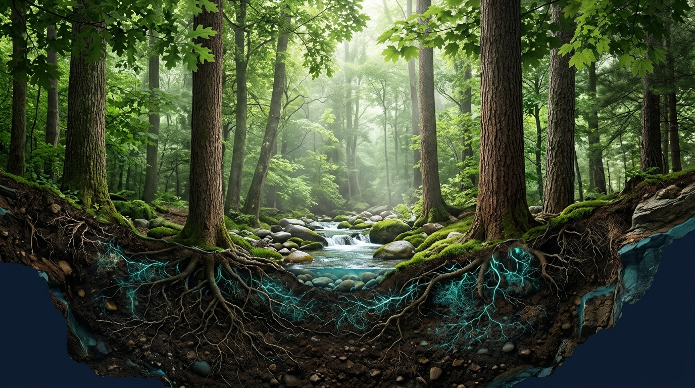
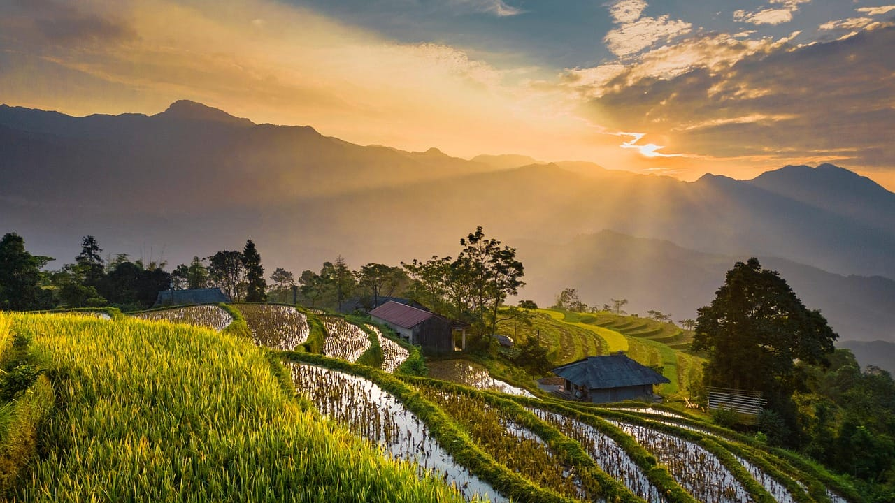
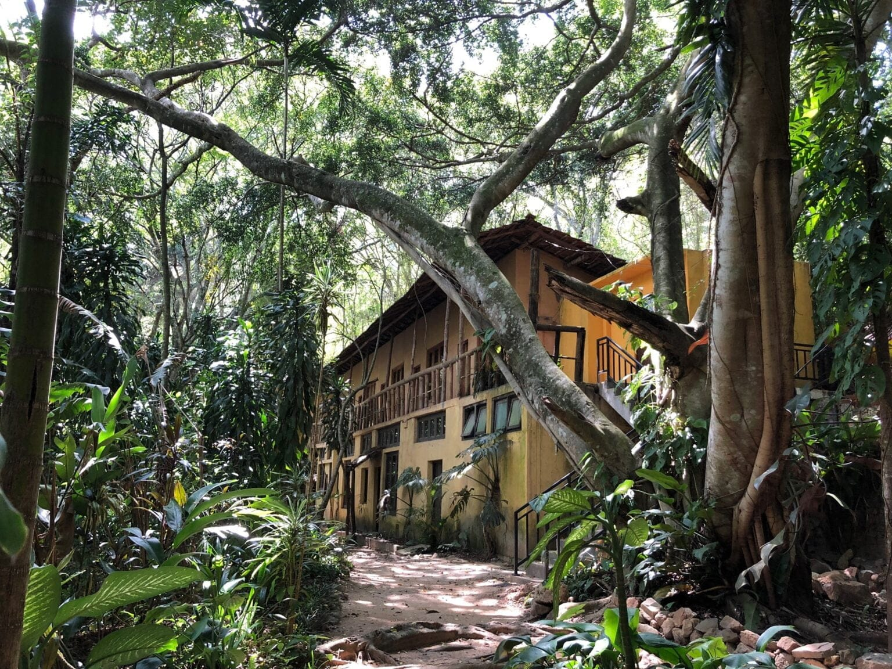
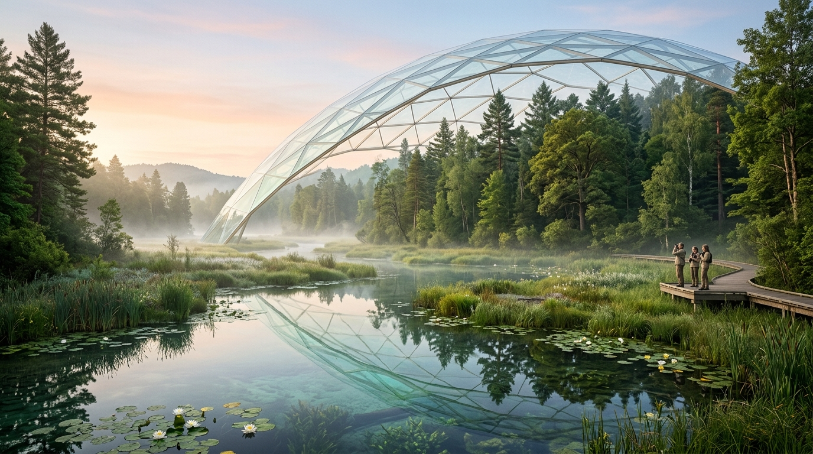
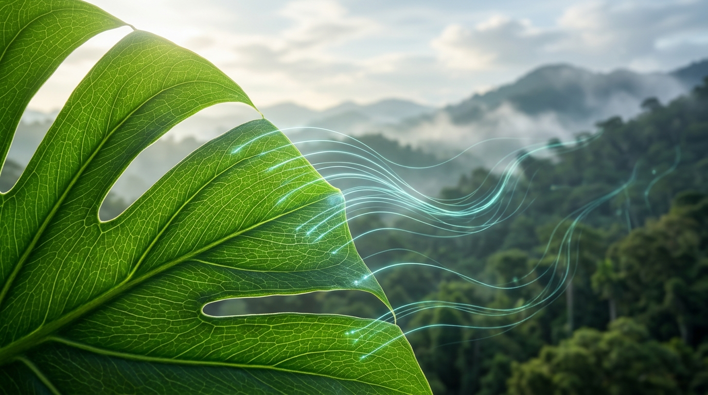
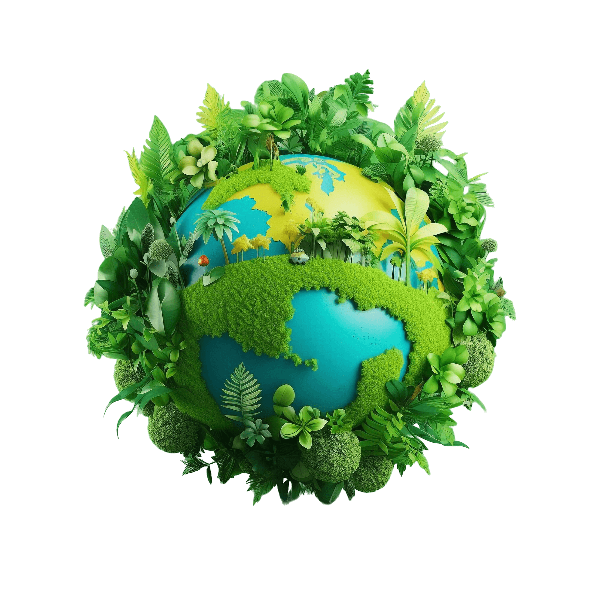

01 • Scientific IndexAQUAE Labs Ecosystems Conservation Index (ALCI)
A scientific framework evaluating seven core ecosystem-service domains through field-based measurements and Monitoring, Recording and Verification (MRV).
AQUAE Labs is developing scientific methods and technology infrastructure to assess, value and track the services provided by natural ecosystems. Through the AQUAE Labs Ecosystems Conservation Index (ALCI), the company aims to connect ecological assessment with natural capital valuation, environmental markets and risk management.
From forests and wetlands to biodiversity-rich restoration landscapes, AQUAE Impact works to make the value of ecosystems more visible, measurable and accessible to organisations seeking evidence-based approaches to conservation and regenerative sustainability.
To make ecological value more visible, assessable and traceable, helping support the conservation and restoration of natural ecosystems
AQUAE Impact brings together field-based ecosystem assessment, monitoring, reporting and verification (MRV), ecological valuation, digital infrastructure and an insurance framework to support a more integrated approach to natural capital accounting.
Empirical surveys of biomass, oxygen, water, soil, cooling and biodiversity.
Consolidating and valuing measured ecosystem outputs against existing markets.
Connecting field assessment evidence with traceable digital asset records.
Risk-aware structuring for specified natural hazards and performance risks.
“The Ecosystem Services that are measured by ALCI, are the tangible, measurable outputs of any given ecosystem. They consider any ecosystem as a living, maturing, continuum whose components vary in mass and value. It is the measured outputs of these components that are consolidated and valued against existing markets.”
Explore each dimension of AQUAE Impact and AQUAE Labs through our dedicated thematic pages.

01 • Scientific IndexA scientific framework evaluating seven core ecosystem-service domains through field-based measurements and Monitoring, Recording and Verification (MRV).

02 • Services & ProjectsField-based ecosystem assessment, MRV, Landscape Valuation Reports, and an end-to-end 9-stage project development workflow.

03 • Living LandscapesLearning from living ecosystems at Belipola Arboretum in Sri Lanka—the world’s first analog forest pioneered by Dr. Ranil Senanayake.

04 • Assets & RiskConnecting assessed ecosystem services with environmental markets and a risk-aware insurance framework for qualifying ecological and delivery risks.

05 • Digital & IPDigital registry, MRV data management, lifecycle tracking and MindChain traceability developed with MindWave Innovations, alongside foundational patent IP.
Capacity-building programs, webinars, and institutional partnerships across natural capital accounting, MRV, analog forestry and environmental markets.
Contact AQUAE Labs to discuss ecosystem assessment, landscape valuation, restoration projects, ALCI Credit development, insurance-related risk assessment, partnerships or educational initiatives.
